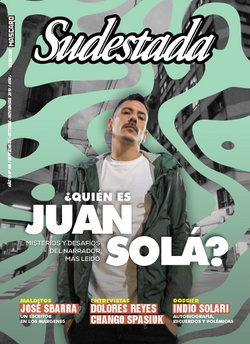

Buscar
Celeste Clandestino
Mientras los pañuelos verdes se preparan para seguir luchando frente al nuevo panorama electoral, no está demás tener presente el entramado que las instituciones más poderosas del país tejieron en la dictadura con trasnacionales extranjeras para oponerse a los derechos sexuales y reproductivos de las mujeres e imponer sus dogmas a nuestros úteros hasta hoy día.
Edición N° 158
Septiembre-Octubre-Noviembre 2019
Revista bimensual
Comprar edición impresaSumario
- ¿Quién es Juan Solá?
- Perdieron
- “La cultura rock ya no significa nada”
- Sin laburo
- Viaje al corazón de la rebeldía Mapuche
- “El poder de las mujeres pasa por la destrucción del orden”
- Celeste Clandestino
- Un triunfo mutante. Un balance después de las PASO
- Ni una jubilada menos
- “Me interesa darle lugar al delirio”
- “Plantearme nuevos desafíos es mi manera de mantenerme sano”
- José Sbarra en los márgenes
- Apuntes sobre el incumplimiento de la Ley de Identidad de Género
- “Los nietos vamos a seguir con esta lucha”
Compartir Articulo
Santificado sea tu útero
Al cierre de esta edición y con el resultado arrollador que el Frente de Todos obtuvo en las últimas Paso, el debate por la aprobación de la Ley de Interrupción Voluntaria del Embarazo volvió a escena. Con algunos rumores que hablan de Victoria Donda en un nuevo ministerio –el de la Mujer– los pañuelos verdes volvieron a agitarse, a poco más de un año del rechazo a la sanción del proyecto de ley.
El rechazo a la media sanción obtenida en la Cámara de Diputados, contó con treinta y ocho votos de senadores y senadoras –en su mayoría representantes de las provincias más conservadoras como Salta, Catamarca, Tucumán y Mendoza– y fue impulsado por el lobby que las Iglesias Católica y Evangélica ejercieron sobre los funcionarios pero también y, sobre todo, por la sorprendente fuerza de choque que los pañuelos celestes supieron concentrar en las calles.
A la marea verde, los grupos autodenominados "pro-vida", supieron oponerle la oleada celeste e incluso adoptar como emblema la misma insignia que honra al movimiento por el Aborto Legal, Seguro y Gratuito desde la década de los ochenta. El pañuelo celeste, vino a responderle al verde y las calles se llenaron de militantes religiosos, autoconvocados e independientes que, en torno al bebito de yeso, las misas, procesiones y las ecografías en vivo, se manifestaron en defensa de "las dos vidas". Pero ni el movimiento "pro-vida", ni los grupos religiosos por la vida, ni las ONG que lo integran surgieron al calor de los ciclos de movilización. El lobby y la puja por condenar a cientos de miles de mujeres a morir indignamente por no poder acceder a una práctica gratuita, segura y en las condiciones de salubridad adecuadas, encuentra sus orígenes en la Dictadura.
La paloma, la píldora y las dos vidas
El Proceso de Reorganización Nacional, eufemismo con el que se nombró la Dictadura más sangrienta de la que pueda dar cuenta nuestro país, además de desarticular las relaciones sociales establecidas al interior del movimiento obrero para su desorganización y la imposición de nuevas reglas para el mercado laboral, intentó promover los valores considerados por la Junta Militar como los esenciales para la conformación de una familia "digna de ser argentina". Y mientras los militares se encargaban de brindar "buenas familias" a los niños que "salvaban" apropiándoselos; la Iglesia Católica, desde organizaciones extranjeras que aterrizaban en nuestras tierras, apuntalaba los valores de la heterosexualidad, la conyugalidad, la monogamia y la procreación, ancladas en mandatos reproductivos y matrimoniales establecidos en creencias tan contemporáneas como la del mesías que nació de una mujer virgen fecundada por una paloma.
A la censura que venían ejerciendo desde hacía tiempo en el cine, el teatro y la publicidad, las Ligas de Madres y Padres de Familia, la Liga de la Decencia y el Ente de Calificación Cinematográfica, se le sumó la preocupación por la incursión de las mujeres en nuevos derechos reproductivos. Ya no serían únicamente motivo de escándalos, la ola de desnudos, pornografía y fotografías de mujeres en poses sugerentes y con poca ropa importadas desde España y su "destape" posfranquista, sobre las que alertaba hacia fines de los años ochenta el Cardenal Raúl Primatesta, en una carta que le envió al mismísimo Teniente General Viola, cuando usurpaba la presidencia...
(La nota completa en la edición gráfica de Sudestada... ¿Por qué publicamos apenas un fragmento de cada artículo? Porque la subsistencia de Sudestada depende en un 100 por ciento de la venta y de la confianza con sus lectores, no recibimos subsidios ni pauta alguna, de modo que la venta directa garantiza que nuestra publicación siga en las calles. Gracias por comprender)
Comentarios
Martina Kaniuka
Articulos más vistos


LIBRERÍA SUDESTADA

Colección infantil

Distribuidora de Libros

Suscripción

Sudestada en URUGUAY

Otros articulos de esta edición
¿Quién es Juan Solá?
Del niño prodigio que publica un libro a los diez años al laburante frustrado en un call center. Del autor ...
“La cultura rock ya no significa nada”
Fue el suceso editorial de principios de 2019, también el fin de una espera interminable de miles de seguidores que, ...
José Sbarra en los márgenes
Años noventa. Desesperado, Enrique Symns llama por teléfono a Tom Lupo a las dos de la mañana: “José Sbarra tiene ...
Perdieron
Perdieron los patrones del hambre, los estancieros del ajuste y los gerentes del desempleo. Perdieron los gurúes de la autoayuda, ...
Viaje al corazón de la rebeldía Mapuche
La Casa de los Jones Huala es un refugio compañero. Detrás del escenario blanco, del olor a torta frita y ...
Apuntes sobre el incumplimiento de la Ley de Identidad de Género
Los movimientos travesti y trans de Argentina han logrado instalar en la agenda pública muchos de sus reclamos. Algunos tienen ...